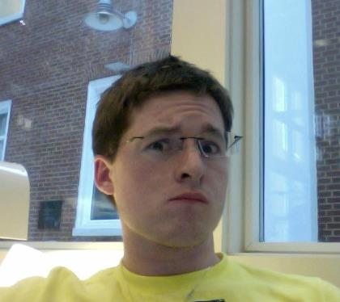
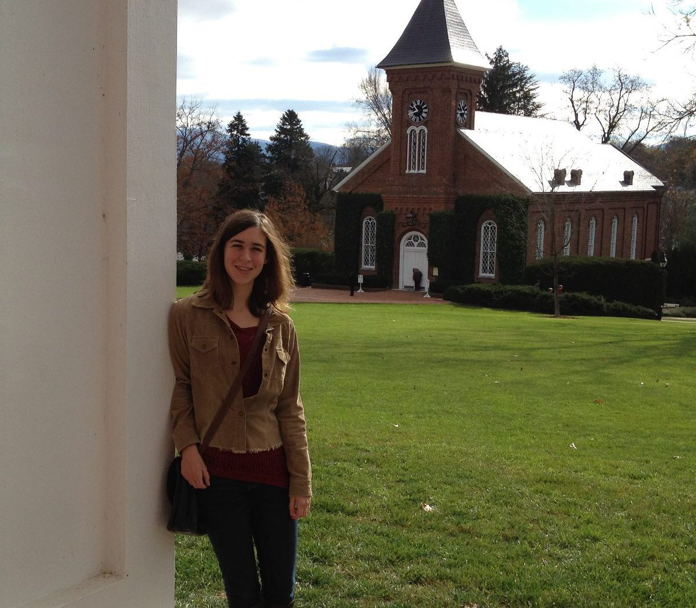
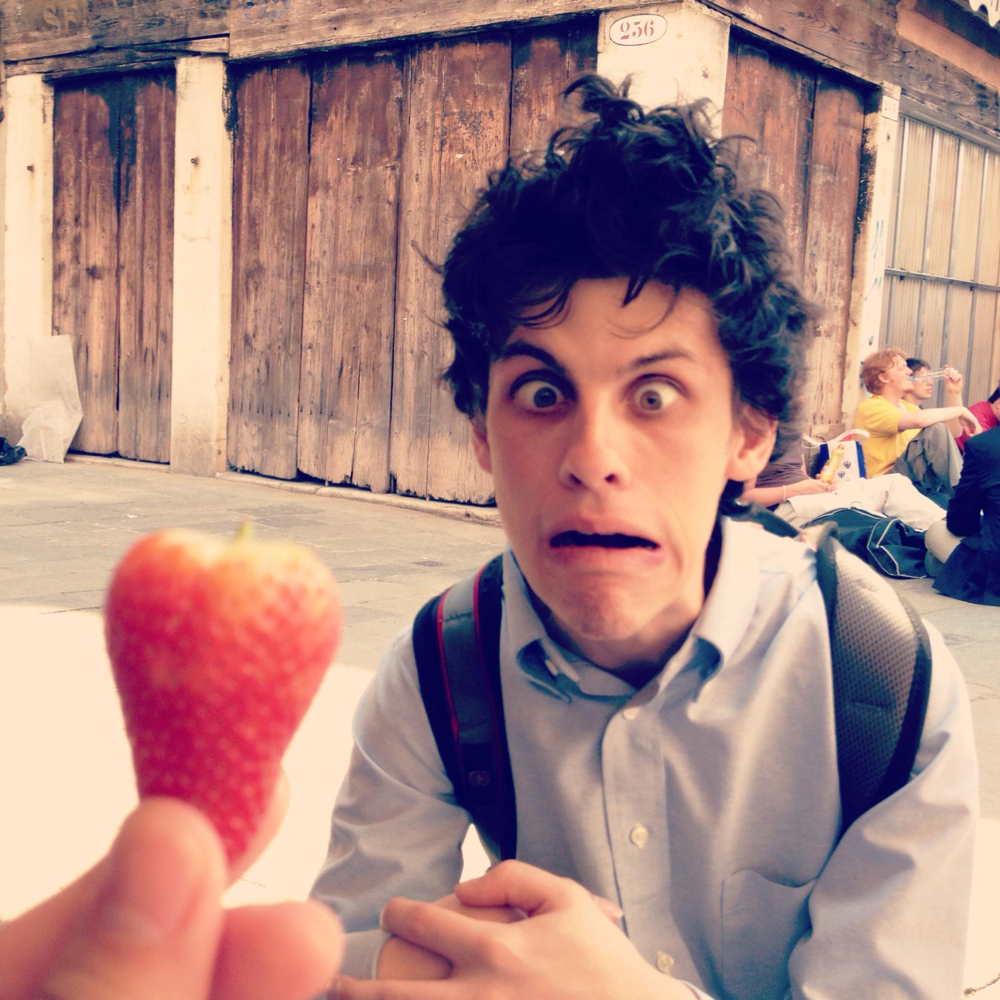
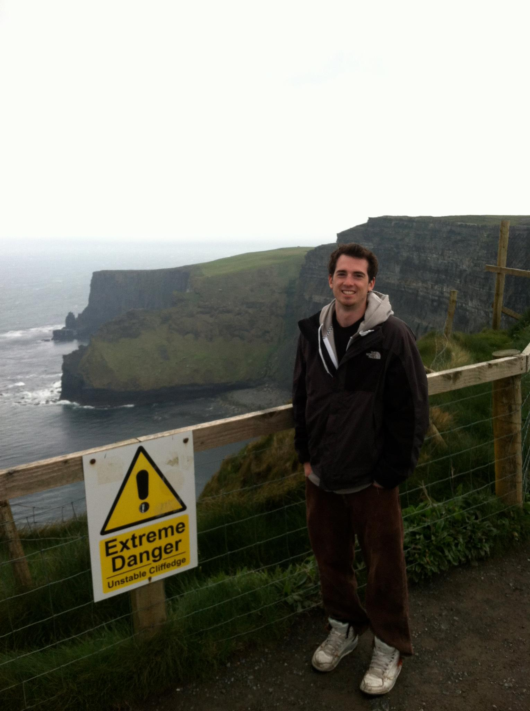

Alexander K. A. BacaComedic Relief In May 2014, I will graduate with double degrees in computer science and chemistry engineering from Washington & Lee University in Lexington, Virginia. My major coursework has included classes in Organic Chemistry, Algorithms, Ordinary Differential Equations, and Software Development. In chemistry, I was selected to work with Professor Marcia France as an advanced organic chemistry research assistant. I am currently beginning to work with Professor Joshua Stough on an independent study leading to an honors senior thesis in the area of machine learning. As a liberal arts student, I have studied a wide variety of subjects in addition to my major courses. Outside of my majors, I have taken courses that focus on creative and analytical thinking, unbiased judgment and decision making, communication and understanding. I have, for example, taken courses such as ‘The Knight and Society,’ 'Microeconomic Theory,' and ‘The Philosophy of Logic’ which have allowed me to approach problems from new directions. In addition, participation in the University-Shenandoah Symphony Orchestra and the Varsity Swim team have provided me with ways to challenge myself outside the classroom. Recently, the university's program in Leadership selected me as the Head Trip Leader for the 2013-2014 leadership program. These experiences have greatly complimented my major coursework. My ultimate goal is to apply my skills to the business world. |
Alicia Bargar I am a senior, very nearly an alumnus, at Washington and Lee with double majors in physics and computer science. Over the past four years, I've been amping up experience in human-oriented computing. I've conducted research at Iowa State's Virtual Reality Applications Center and University of Southern California's Interaction Lab. Back at W&L, I have worked as an Intro Computer Science TA, an ITS Help Desk Employee, and as Head Tech Advisor for an on-campus organization. I find the most fun and interesting parts of computer science to be those most closely tied to revolutionizing the ways that users interact with technology in both applications and interfacing. This fall, I'll be beginning the Computer Science PhD program at Georgia Tech's School of Interactive Computing. |
Richard MarmorsteinAnti-Hero Richard is deathly afraid of strawberries. |
Phillip LisoviczSubtitle Phil is a senior Business Administration and Computer Science double major at W&L. He was born and raised in Glen Ridge, NJ and loves to spend summer weekends at his family's beach house in Seaside Park, NJ. Phil is an avid New York Jets fan, and loves to golf, surf, and dabble in electronic music production in his free time. |